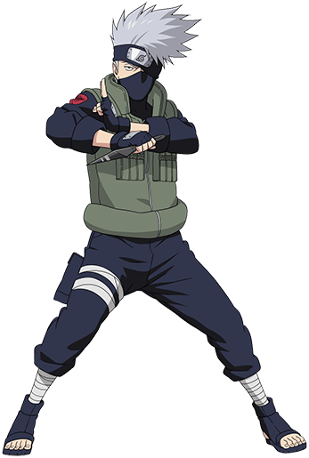

Modelado en Maya de Kakashi Hatake
Descripción
Este proyecto fue el primer modelado humanoide que realice en la
herramienta de modelado "Maya" y fue realizado este mismo semestre
(Agosto-Diciembre 2021). Este proyecto fue una entrega para la
materia: Modelación Digital impartida por el licenciado Jorge Eduardo
Vilchis. El proyecto no requería ser una imitación perfecta ni
extremadamente detallada del personaje pues fue uno de los proyectos
realizados al principio del curso.
Aprendizajes
Antes de modelar a Kakashi no había realizado ningún proyecto tan
complejo como un cuerpo humano o humanoide y ese fue justo uno de mis
aprendizajes. Logre diseñar los dedos y pelo del personaje así como
varios detalles como partes de la armadura, equipamiento, etc.
Dificultades
La principal dificultad que tuve al realizar este proyecto fue la poca
familiaridad que tengo con la herramienta. Al no saber operarla
completamente,me encontré con diversas dificultades y retrasos. Estoy
seguro de que, de proponerme a volver a realizar al personaje, me
quedaría mucho mejor ahora que la primera que lo hice.
